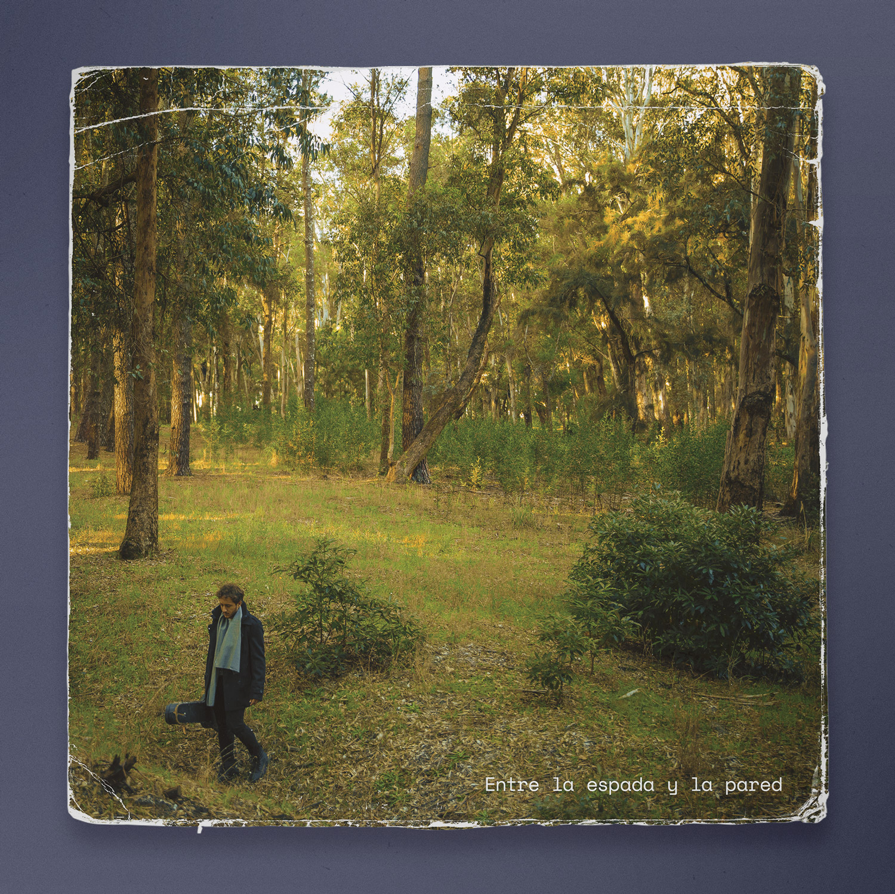

Ediciones y Fotomontajes varios
Hace muchos años que uso software como Photoshop con la fotografía como un medio de expresión. Lo que empezó siendo (y sigue) como un juego se transformó en una técnica. Composición, color, textura, montaje, collage, en búsqueda de hiperrealismo o surrealismo.
Imágenes nuevas de calidad profesional muchas veces a partir de materia prima poco amigable para el flujo de trabajo. Como todo lo que caracteriza al diseño uruguayo a lo largo de la historia, se hace lo mejor con los recursos que se tienen.
Cartón de Grapamiel Vesubio


Fotografía grupal de La Mala Lengua


Tapa de disco de Gonzalo Brancciari

Tapa de disco de Diego Rodríguez


Afiches e imágenes para Pro Peñarol